MSS Code Factory 2.11: Mark Stephen Sobkow's Code Factory
MSS Code Factory 2.11: Mark Stephen Sobkow's Code Factory
| Prev | Documentation Home | Next |
The Name of your Table is the name used for the objects produced for it throughout the entire system. This is probably the single most important attribute in the entire MSS Code Factory 2 manufactured code base, because it affects everything from file names to class names.
The Db Name is used for the name of the database table, and as part of the name for the stored procedures produced for the table. As several values are concatenated to a database name for the database creation scripts, I recommend that you try to limit your database names to 12 characters for maximum portability. Oracle is particularly fussy about the total length of names. If no database name is specified, the rules use the Name of the table by default.
The ShortName is used is some cases by the code. If a ShortName is not specified and one is not defined, the rules default to using the Name.
The Description and Short Description are not used by the rule base; the idea was to use them for generating help text for the GUI, but I haven't gotten around to that yet.
The Label is used for display purposes in the GUI. If no Label is provided, the Name of the table is used.
Default Visibility is supposed to control whether a table is visible in the GUI or not, but I haven't implemented those rules yet.
The Superclass table has to be one that is defined by your model. You can not extend an imported/referenced table, as that would break the existing application code that was built for that model. You can only specify the Superclass table during the initial Add of a table. It would be too difficult to untangle all of the attributes and relationships created when a Superclass is specified automatically, so if you want to change the hierarchy of objects later, you'll have to do it manually by editing your columns, indexes, and the Superclass relationship of the table.
The Table Class Code should be 4-6 characters, uppercase, and must be unique amongst all the models imported or referenced by your model. This value is used to create the names of variables and attributes throughout the system, as well as to distinguish between objects in the class hierarchies. It is very, very important to the manufactured code.
All tables must have a unique Primary Index over non-nullable columns, though of course you can't establish this reference during the initial Add of a table because there are no indexes defined yet.
The Lookup Index is an index over a unique name attribute of the table object, used to perform merge and lookup processing in the SAX Loader, and to present choices for referencing lookups in the GUI.
The Alternate Index, if specified, must have a non-nullable string attribute as it's last column, and must be a unique index. If specified, it is used to locate instances for merge-style processing when loading SAX data and sometimes for presenting GUI choices. Either the Alternate Index or Lookup Index can be specified, but not both.
Page Data is a future-reference attribute that will control whether paging queries are produced for the databases and table objects in the code. Page Data methods will never be automatically used by the manufactured code; they'll just be produced so you can use them in custom code.
Is Instantiable indicates whether this is a "virtual" class or not. While the tag "virtual" is not actually used in the code, specifying that a table is not instantiable means that it is not included in the list of objects that can be added to containers in the manufactured GUIs. It also restricts the code produced by the system in a couple of other ways.
Has History indicates whether to produce a dbname_h history table in the database that will be populated with change records. No queries are produced for the history tables, nor accessors. The idea is to provide this information auditing so you can write custom code and reports that need it, not so that it can be accessed by the manufactured GUI. If the base class table specifies that it has history, all subclasses must also specify that they have history. The reverse is also true.
Has Audit Columns indicates whether an object has create, createdby, update, and updatedby columns. This should be true on the base class table of a hierarchy if any. Subclass tables should never set this value to true.
The Qualifying Table specifies the root of the object containership hierarchy for determining full names of objects. For example, CFInternet defines the Qualifying Table of the TLD to be the Tenant, so it starts the dot-names with the TLD, ignoring the containing Tenant's name, much less the names of objects above that.
Polymorphic Base isn't really used. The idea was that it would let you subclass imported/referenced tables, but I never figured out how to make that work with the clients, so it isn't used by the rule base at all. I should probably just delete this attribute from the system.
Sec Scope is none, System, Cluster, or Tenant, indicating what kind of security checks are implemented. A table with no/null security scope lets all operations be performed on it by anyone. A System table requires that you be a system user to create, update, or delete data, but anyone can read it. Cluster and Tenant scoped tables check with the security group tables to determine if the user has access to the operation requested.
If the Sec Scope is Cluster or Tenant, the class hierarchy for the table object must have an appropriate Owner or Container relationship defined that can be used to resolve the Cluster or Tenant that is enforcing the security of the object instances.
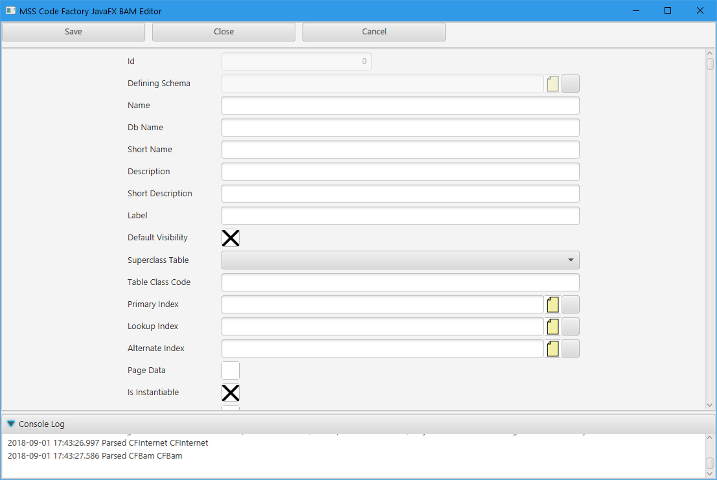
You can define any of the data types as a column of a table save for the id generators; those have to be defined by a Schema. If an id generator specifies a dispenser and you flag the Table Col that references with "Generate Id", then the owner or container relationship for the table must locate the dispenser table. As you also have to be able to locate the appropriate table for the Security enforcement, this tends to be pretty natural -- data is owned/contained by the system, the cluster, or the tenant.
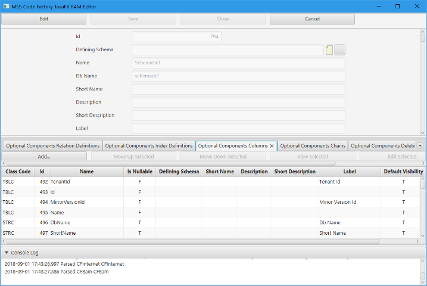
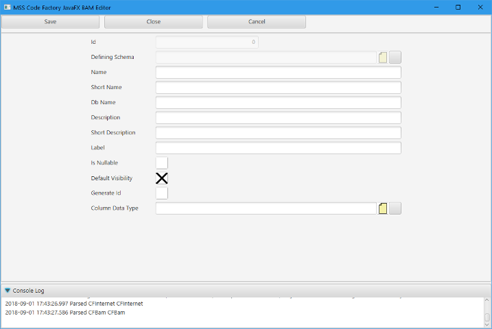
Indexes are the heart and soul of any relational database application. Whether an index is actually implemented by the database itself is controlled by the "Is Db Mapped" attribute. You always want unique indexes to be database mapped.
The Suffix of an Index is used to build the names of the index in code, rather than the name of the index itself, by concatenating it with the name of the table object.
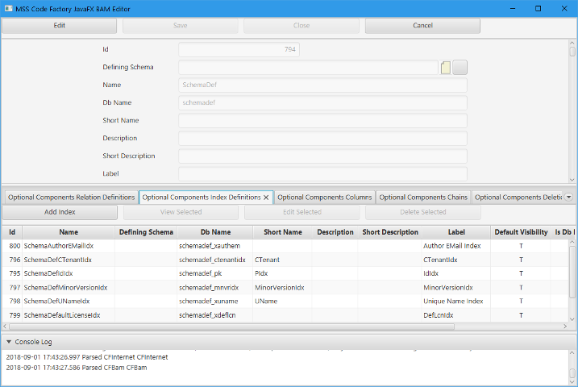
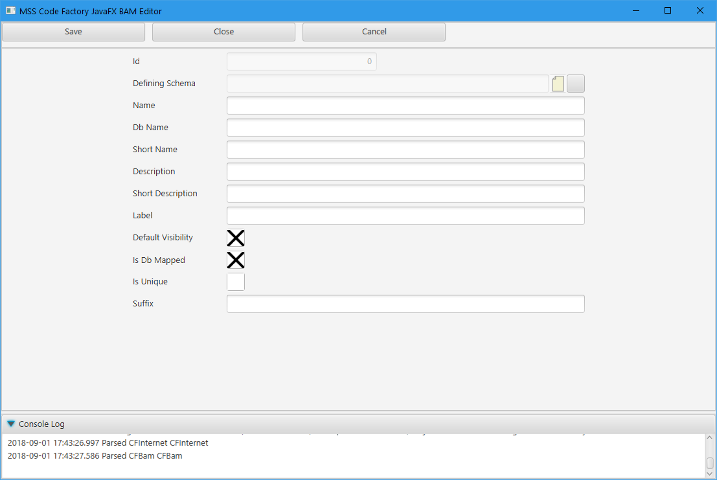
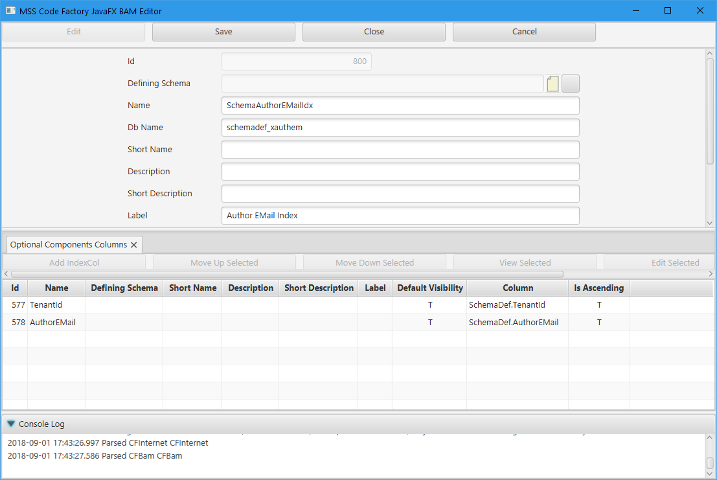
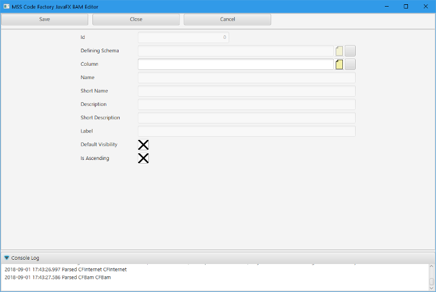
When you define a relationship, it is between the indexes of tables. All of the columns of those indexes have to be matched up by Relation Columns, with none being linked twice nor omitted.
The Relation Type has special meaning to the code. A Container indicates that the object has a corresponding Components relationship in the Container object, which often specifies that the Components relation is an XSD Container. A Container relation can be used to locate id generators or security information if the Container is a Tenant or Cluster.
If a table object specified a security scope of tenant or cluster and it is a Component of a sub-object contained by the Tenant or Cluster, it must specify an Owner relation to the tenant or cluster. The linkages will be automatically established by the SAX parsers and GUI forms, so ownership is pretty trivial to use in your code.
A Master/Detail relation pair and a Parent/Child relation pair are both similar to a Container/Components relation, except that the linkages are not automatically established. You need to programmatically establish the link upwards, so it should always be an optional relation as you need to be able to edit the object with a null reference during the Add of the object.
The Population Dependencies of a Lookup are used to populate a choice list of objects for the lookup in the GUI. It must always point to a relation that targets the same table class as the lookup targets. It is just a chain of relationships to be followed to locate the data, starting from the current object instance. Although you could define a population dependency for other types of relationships, they are not processed nor manufactured for anything but lookups, parents, and masters.
The Narrowed Relation refers to a more general version of the relationship in the table class hierarchy. For example, in CFBam's model, the Value defines a general relationship to a containing Scope, while an EnumType narrows that relationship to one referencing a containing SchemaDef, and an Int16Col narrows that relationship to a containing Table. In both cases, the SchemaDef and Table are specializations/sub-classes of the general Scope. This can be very important information for determining which specific table classes can be added to a given container at runtime.
When you narrow a relation, make sure that you narrow the narrowest version of the relationship in the hierarchy. You can have multiple narrowings in a hierarchy, but if you break the chain, invalid code will be produced and the reference links won't be properly coordinated by the code.
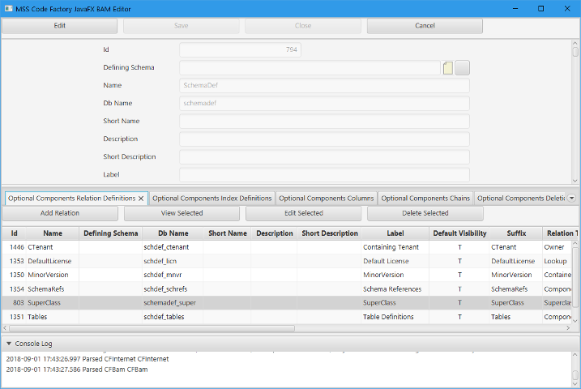
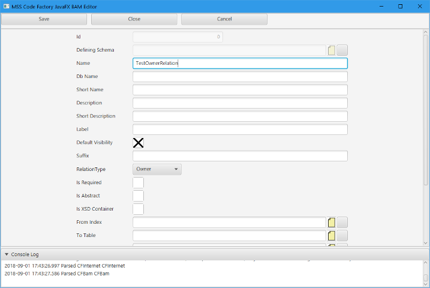

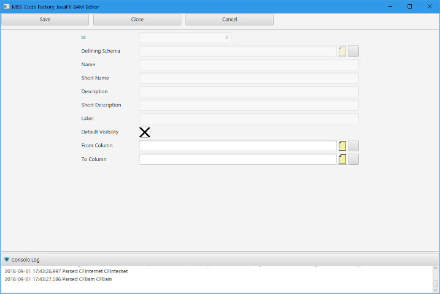
Chains are a very special construct that is used to allow the user to control the sorting of objects for display and processing by implementing a double-linked list over Prev and Next relations for the table that specifies the Chain. These Prev and Next relations need to be named exactly that, because the code for the stored procedures to implement chains is incredibly complex and I could not figure out a way to probe the relation names so I had to hardcode a lot of the prefixes and suffixes and variable names in the procedures.
The Prev and Next relationships also need to be over indexes whose columns are all prefixed by Prev and Next, respectively, for the same reason as the relation naming itself.
The index columns have to be nullable, and the Prev/Next relations have to be optional.
The target of the Prev/Next relations must be the primary index of the table object that is defining the chain; you can not use inherited relations or indexes to establish a chain.
Finally, only one chain can be defined by a given object table hierarchy. You can define different chains in related sibling classes, but not in a given hierarchy.
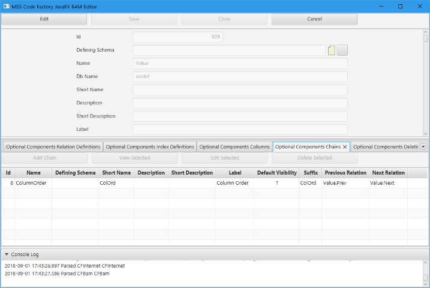
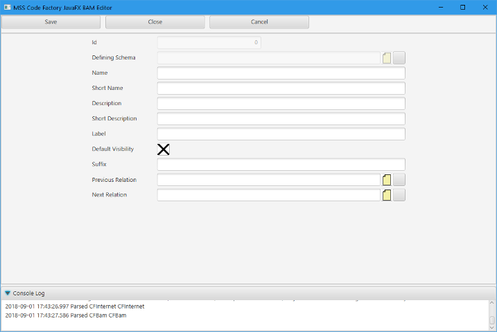
Deletion Dependencies are a way of implementing "On Delete Cascade" with stored procedures and in the RAM database. You can follow a chain of up to 4 objects to the target objects that are to be automatically deleted along with an instance of the table class.
Deletion Dependencies are processed in reverse order by the stored procedures and RAM database. Order is important.
You can add deletion dependencies to referenced/imported tables, so that any data you've attached to those objects can be deleted properly by the database instead of causing integrity constraint violations.
You should not rely on database cascades to delete objects -- always specify your DelDeps.

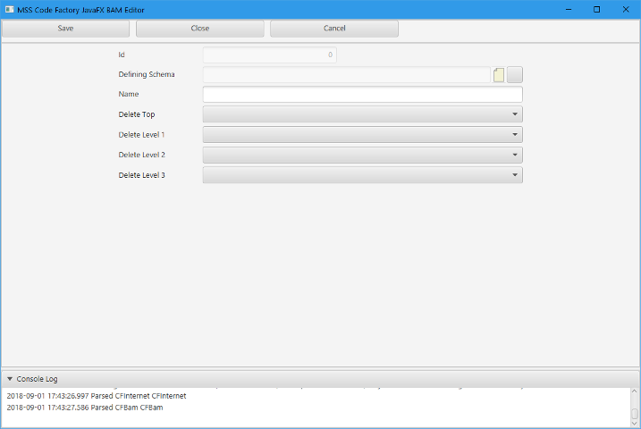
ClearDep processing is similar to DelDep processing during a delete operation, except that it indicates relations that need to be automatically cleared to null before attempting the DelDep processing or deletion of the object itself. For example, there is a ClearDep on the PrimaryIndex lookup of a Table in the CFBam model, as that relationship links a component object of the table and you would always get integrity constraint violations if you didn't clear the relationship to null before deleting those component indexes from the table.
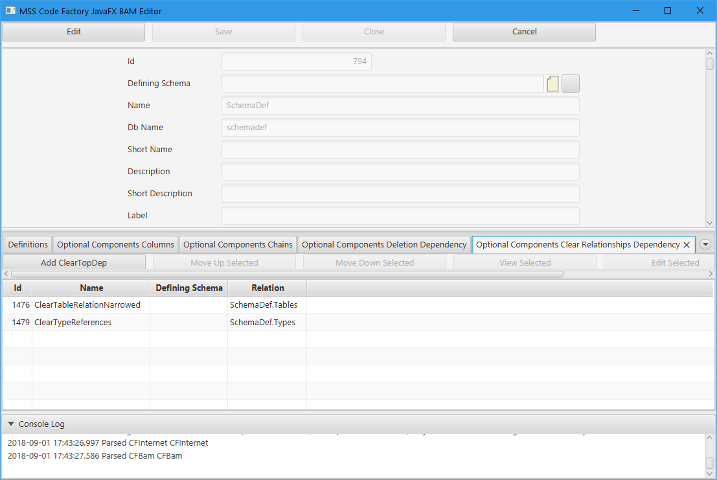
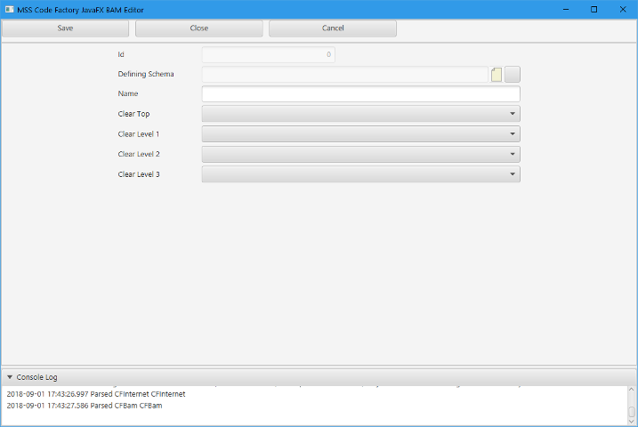
There are three general types of methods that can be remote-invoked at the server from the client. A procedure returning a boolean flag, an Obj method that returns an optional instance, and a List method that returns a list of instances. You can return subclasses of the Obj or List methods as well, and they will be properly assembled at the client by the XMsg processing parsers.
The main reason you would want to implement a server method is to ensure that atomic processing occurs, such that all of the manipulation done by the method is either committed or rolled back as a single unit of work. For example, you would want to use a server method to transfer funds between two accounts in an accounting application, so that you can't have funds being removed from one account without being properly deposited to the second account.
Instance methods pass the primary key attributes of their instance as automatic arguments, and establish the retrieval of the object at the server end for you.
All other parameters have to be atomic attributes defined as schema data types. You can not specify an atomic data type directly; it has to be a schema data type, similar to one referenced by a Table Col.
You can find examples of each of the server method types in the CFDbTest model. Be warned -- server processing is more code intensive than client-side code. But at least it can be done.
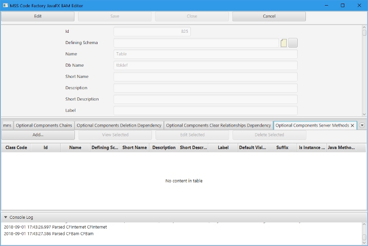
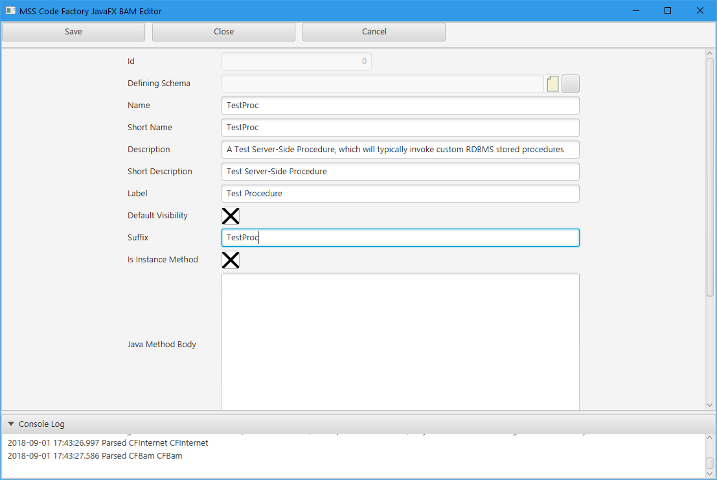
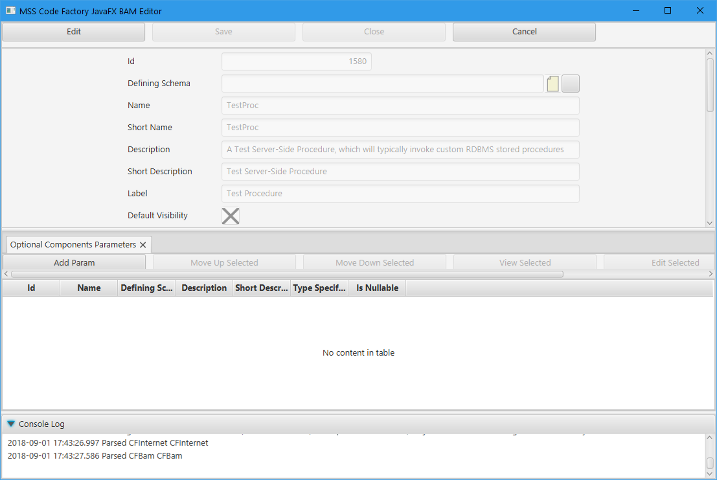
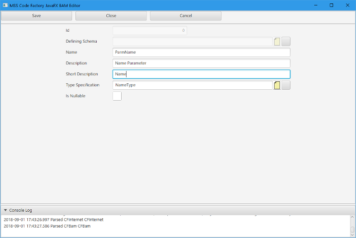
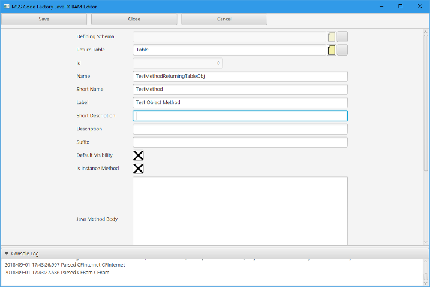
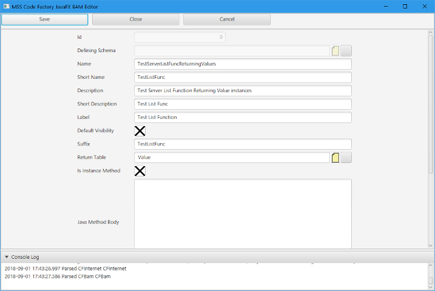